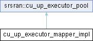

Inheritance diagram for cu_up_executor_mapper_impl:

Public Member Functions | |
| cu_up_executor_mapper_impl (span< task_executor * > dl_executors, span< task_executor * > ul_executors, span< task_executor * > ctrl_executors) | |
| ptr | create_dl_pdu_executor () override |
| Creates a task executor to handle DL PDUs in the user plane. | |
| ptr | create_ul_pdu_executor () override |
| Creates a task executor to handle UL PDUs in the user plane. | |
| ptr | create_ctrl_executor () override |
| Creates a task executor appropriate for the control plane. | |
Additional Inherited Members | |
 Public Types inherited from srsran::cu_up_executor_pool Public Types inherited from srsran::cu_up_executor_pool | |
| using | ptr = std::unique_ptr<task_executor, unique_function<void(task_executor*)>> |
Member Function Documentation
◆ create_ctrl_executor()
|
inlineoverridevirtual |
Creates a task executor appropriate for the control plane.
Implements srsran::cu_up_executor_pool.
◆ create_dl_pdu_executor()
|
inlineoverridevirtual |
Creates a task executor to handle DL PDUs in the user plane.
The returned executor should be of low priority, but optimized for high computational loads.
Implements srsran::cu_up_executor_pool.
◆ create_ul_pdu_executor()
|
inlineoverridevirtual |
Creates a task executor to handle UL PDUs in the user plane.
The returned executor should be of low priority, but optimized for high computational loads.
Implements srsran::cu_up_executor_pool.
The documentation for this class was generated from the following file:
- lib/cu_up/cu_up_executor_mapper.cpp